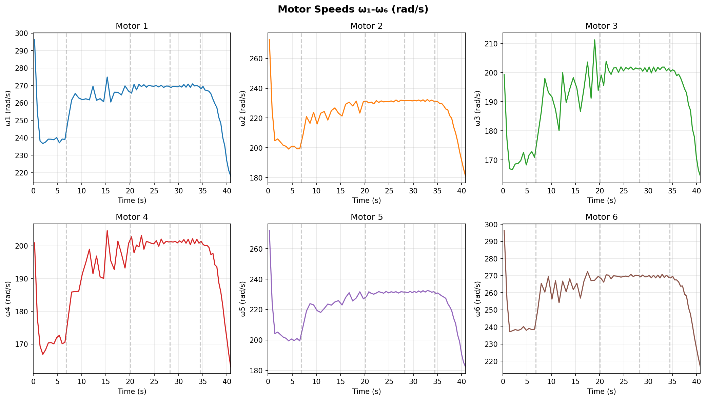
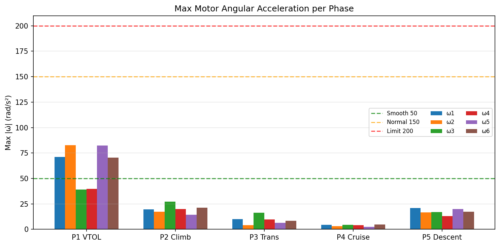
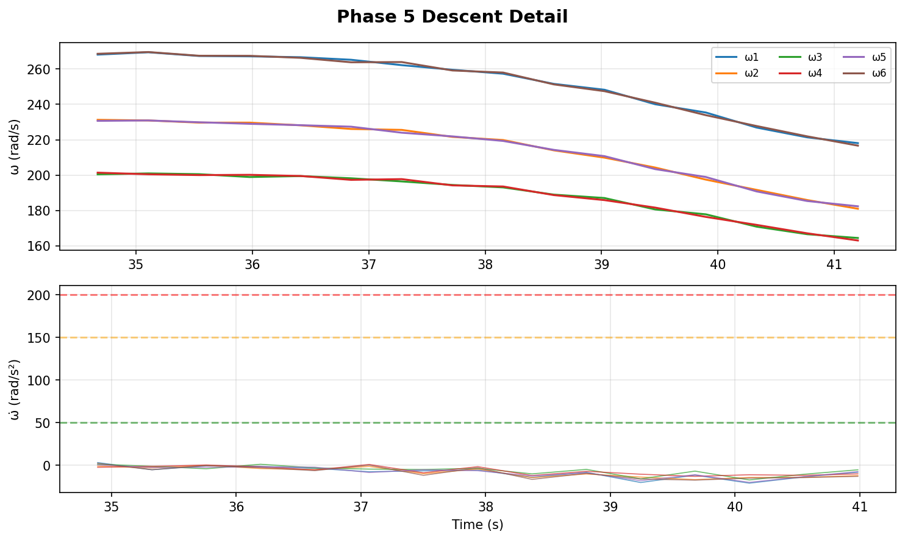
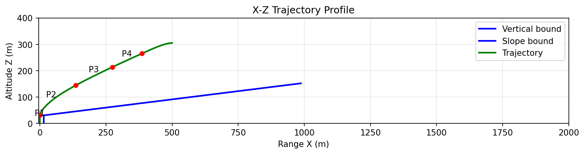
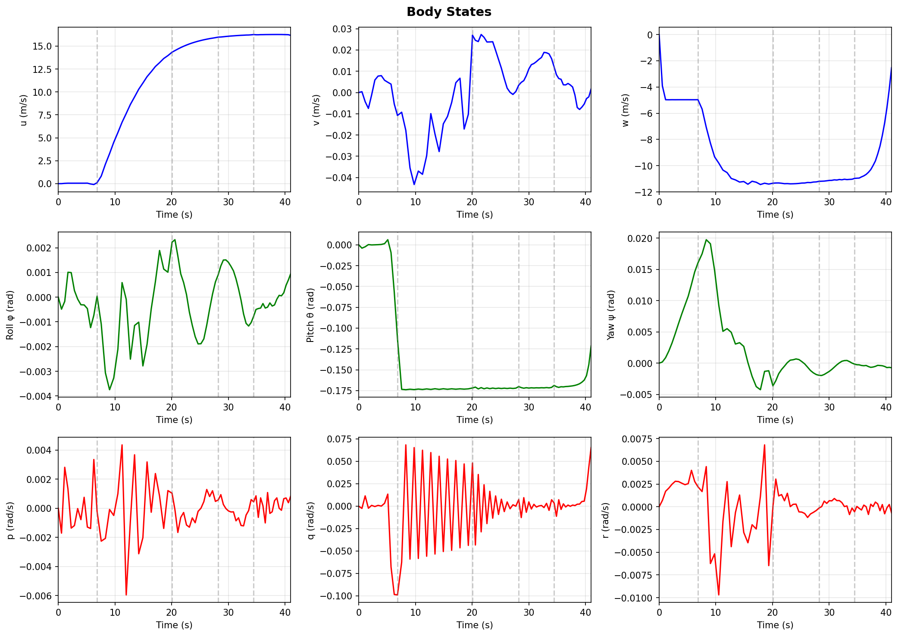
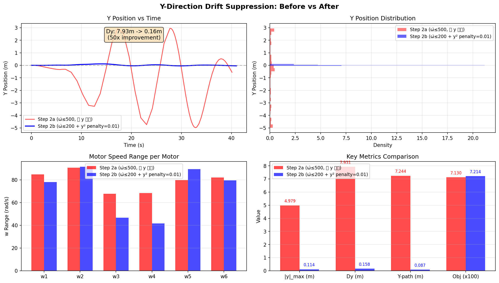
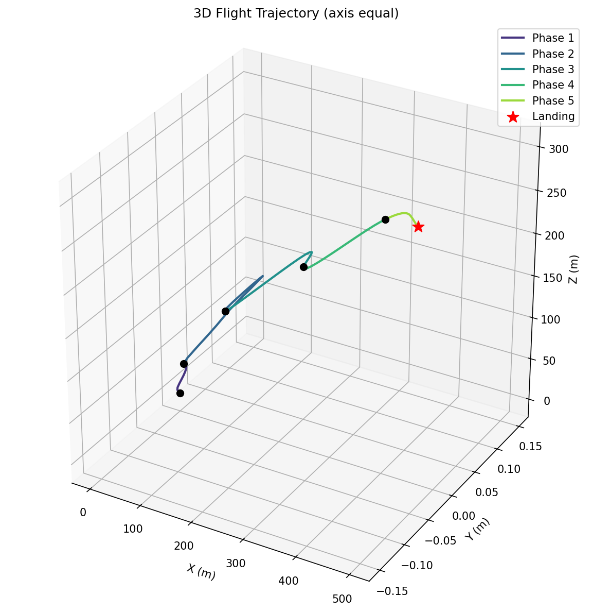
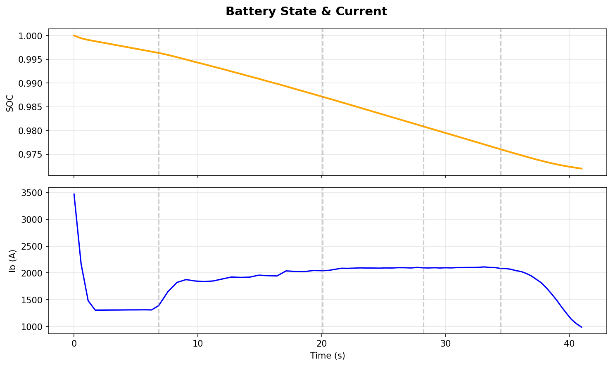
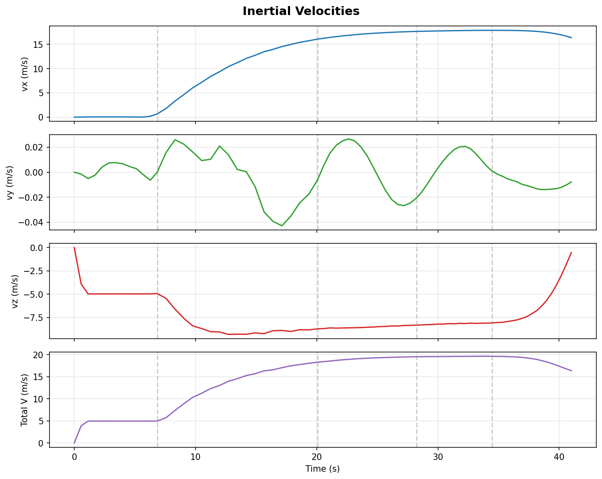

针对六旋翼 eVTOL 飞行器构建一个 13 状态、6 控制的最优控制问题。动力学包含刚体欧拉方程、前进比依赖的旋翼气动模型以及二次型电池模型。
状态 x = [Qb, p, q, r, u, v, w, φ, θ, ψ, x, y, z]ᵀ
Qb: 电池电荷量 (Ah)
p,q,r: 体轴角速率 (rad/s)
u,v,w: 体轴线速度 (m/s)
φ,θ,ψ: 欧拉角 (rad)
x,y,z: 惯性系位置 (m, NED)控制 u = [ω₁ … ω₆]ᵀ
六旋翼转速，约束范围 [10, 350] rad/sQb_dot = Ib / 3600
p,q,r_dot = J⁻¹( [L,M,N]ᵀ − ω×Jω )
u,v,w_dot = −ω×V + g·R⁻¹e₃ + F/M
φ,θ,ψ_dot = T(φ,θ)·[p,q,r]ᵀ
x,y,z_dot = R(φ,θ,ψ)ᵀ·[u,v,w]ᵀ前进比依赖系数：
Jᵢ = 2πV / (ωᵢ·Dm)
ct(J) = −0.1039J² − 0.0763J + 0.0848
cm(J) = −0.0154J² + 0.0042J + 0.0042
T = Σ ρ·Dm⁴·ct·ω² / (4π²)
L = −Σ Tᵢ·Lyᵢ
M = Σ Tᵢ·Lxᵢ
N = ρ·Dm⁵·Σ cm·σᵢ·ω² / (4π²)SOC → 开路电压 → 电流：
SOC = 1 − Qb / Qmax
Uoc(SOC) = c₁·ln(SOC) + e^(−c₂·SOC) + c₃·SOC³ + c₄
电机功率 → 二次 Ib 方程：
−Rbatt·Ib² + (Uoc − k·Qb_adj)·Ib − Pb/(Ns·Np) = 0目标函数
J = battery_usage
+ 0.3 · time_cost
+ 0.005 · angular_accel_penalty
+ 0.1 · motor_smoothness_penalty
+ wy · y²_drift_penalty (wy=0.01)关键约束
• 动力学: RK4 连续性约束
• 控制量: ω ∈ [10, 350] rad/s
• 角加速度: |ω̇| ≤ 200 rad/s²
• 空域: z + 0.125x ≥ −28.6 (Phase 1-2)
• 爬升梯度: ≥ 4.5% (Ph2), ≥ 2.5% (Ph4)
• 速度: V ≥ 10 (Ph2-3), V ≥ 16 (Ph4)
• 终端: x ≥ 500 m, z ≤ −305 m从 MATLAB 迁移到 Python 过程中暴露了四个相互关联的问题。每个问题经过系统性诊断后，逐一用针对性修复方案解决。
Python 设 z₀ = −31.5 m（悬停高度），MATLAB 使用 ε·1₁₃（地面起始）。跳过了地面→悬停的转速斜坡。
修复: z₀ = 0，递进式热启动求解适航要求在转换段前设置 h₁ = 3 m（FATO→悬停）。当前阶段直接从地面跳到 ~30.5 m。
待办: 增加带 h₁ 约束的 Phase 1a优化器利用体轴耦合降低电池消耗，产生 y ∈ [−5, +3] m 的摆幅。
修复: y² 软惩罚 (wy=0.01), 43.6 倍抑制Phase 3 峰值 ω̇ 达到 1216 rad/s²——远超无刷电机物理限制。
修复: 递进式 ω̇ 边界 500 → 200 rad/s²初始 Python 解存在严重的电机振荡——Phase 3 ω̇ 值超过 1200 rad/s²。我们采用三指标基准对物理可行性进行分类：角加速度、累计变化量和阶段间边界跳变。


| 阶段 | ω̇ 最大值 | 边界跳变 | 等级 |
|---|---|---|---|
| P1 (起飞) | 83 | 11 | 正常 |
| P2 (转换) | 27 | 4 | 平滑 |
| P3 (爬升) | 16 | 1 | 平滑 |
| P4 (巡航) | 5 | 1 | 平滑 |
| P5 (下降) | 21 | 1 | 平滑 |

从 z=0 直接求解加上紧约束会导致 IPOPT 发散（NaN）。我们采用递进式热启动策略：从宽松约束开始，逐步收紧，并持久化中间解。
每一步从上一个 .mat 解文件热启动，通过独立测试脚本（test_step2a.py / test_step2b.py）验证收敛后再推进。


无侧向惩罚时，求解器利用体轴耦合（俯仰-滚转-偏航相互作用）降低电池消耗，产生 y ∈ [−4.98, +2.95] m 的 S 形曲线——±8 m 的侧向摆幅。在目标函数中加入二次 y² 软惩罚后，仅以 1.2% 的成本增幅实现了超过 50 倍的侧摆抑制。


| 指标 | 无惩罚 | 有惩罚 (wy=0.01) | 改善 |
|---|---|---|---|
| |y| 最大值 | 4.98 m | 0.11 m | 43.6 倍 |
| Δy (摆幅) | 7.93 m | 0.16 m | 50.3 倍 |
| 目标增幅 | — | +1.2% | 极小 |
调参说明：权重 wy = 1.0 会导致求解器在原点附近停滞（x ≈ 0）。wy = 0.01 实现了最优平衡——充分抑制漂移的同时不限制前向运动。独立验证脚本（test_step2a.py、test_step2b.py）确认每步收敛后再交付。
收敛后的轨迹满足所有约束条件——包括地面起始（z = 0）、紧 ω̇ 边界和最小侧向漂移——同时在 500 m / 305 m 爬升任务中保留了 97.2% 的电量 SOC。
| 参数 | 数值 | 状态 |
|---|---|---|
| 初始高度 | z = 0.0 m | OK |
| 终端位置 | x = 500 m, z = −305 m | OK |
| 电池 SOC | 97.2% | OK |
| 总时间 | 41.0 s | OK |
| 最大 ω̇ | P1=83, P2=27, P3=16, P4=5, P5=21 | OK |
| 边界跳变 | 1–11 rad/s | OK |
| 最大速度 | 19.6 m/s | OK |
| 最大电池电流 | 3471 A | OK |
| Y漂移摆幅 | 0.16 m | OK |

